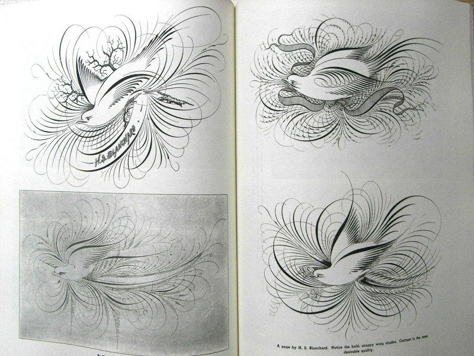
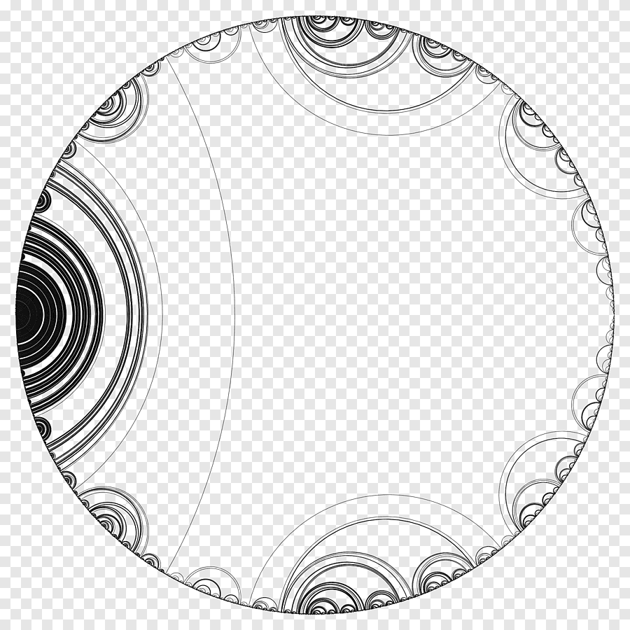

About

Hi my name is Bill and i would like to talk to you about Mandelbrot Caligraphy. First off I was drawn to Mendelbrot, because on its intrinsic, and mesmorizing style which includes,
but not limited to ornate cursive style, as used by Penman, Engrossers, Illuminators, and Flourishers, which has been varied title's
people like myself have been called throughout the centuries. I started developing a passion for this about 8 years ago. I started off with basic cursive styles,
blackletter alphabet, all the way to modern styles.
Relevance

Mandelbrot Caligraphy is a mystery til you really get into it, its a form of beautiful writing. it gives you a feeling of mystic with the repitions as you look
further and further into piece. This form of writing can be easily confused with its art alternative as it uses different styles, and requires different tools to create.
There are 2 different associations with Mabrot, Ornate Pictorial, and Caligraphy.
What Caligraphy can do for you

Whether you're wanting to make that certain someones day a little more special, Make a fantastic gift Presentation, Make ordinary things extrodinary,
Give the ultimate wedding gift, or even just for yourself or to make art for your home. I can make any and all for you. Feel free to reachout with any questions
or concerns. I look forward to hearing from you.